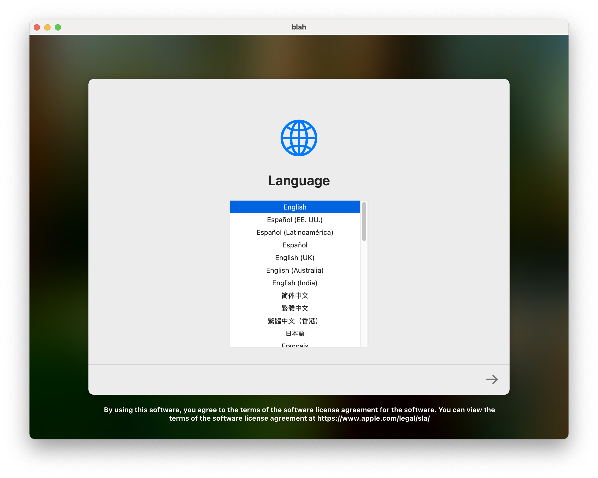
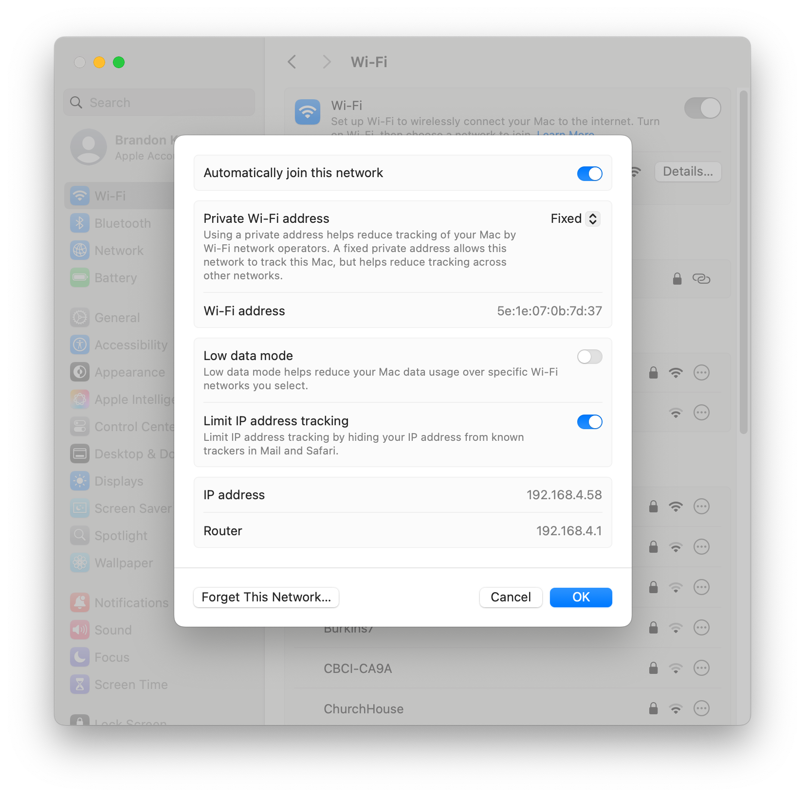

How to create a macOS virtual machine with Tart
This post documents how to set up a macOS virtual machine with Tart.
Installing Tart
Option 1: Install Tart via Homebrew
If you don't already have Homebrew installed
-
Navigate to http://brew.sh/.
-
Copy and execute the install command shown on the Homebrew website in Terminal:
/bin/bash -c "$(curl -fsSL https://raw.githubusercontent.com/Homebrew/install/HEAD/install.sh)"⚠️ Caution: Be careful about executing shell scripts directly from the internet.
Once brew is installed, install Tart
brew install cirruslabs/cli/tart
Option 2: Install Tart directly from Github
-
Download Tart. As of mid-July 2025, 2.28.2 is the latest release:
curl https://github.com/cirruslabs/tart/releases/download/2.28.2/tart.tar.gz -Lo tart.tar.gz-Lwill allowcurlto follow redirects andospecifies what you want to name the downloaded file and where you want to save it.
-
Extract Tart to
/Applications:
tar -xzf tart.tar.gz -C /Applications
-
Create an alis for Tart, so that you can simply type
tartin terminal to access it.alias tart=/Applications/tart.app/Contents/MacOS/tart⚠️ If you try to create a symlink instead of an alias, this make cause
tart createto fail in unexpected ways due to not being able to launch/Applications/tart.app. When in doubt, stick to an alias.
-
Make sure Tart is installed properly. If you type
tartin terminal and see the following output then you are good to go!% tart USAGE: tartOPTIONS: –version Show the version. -h, –help Show help information.
SUBCOMMANDS: create Create a VM clone Clone a VM run Run a VM set Modify VM’s configuration get Get a VM’s configuration list List created VMs login Login to a registry logout Logout from a registry ip Get VM’s IP address exec Execute a command in a running VM pull Pull a VM from a registry push Push a VM to a registry import Import VM from a compressed .tvm file export Export VM to a compressed .tvm file prune Prune OCI and IPSW caches or local VMs rename Rename a local VM stop Stop a VM delete Delete a VM suspend Suspend a VM
See ’tart help
’ for detailed help. Obtaining a macOS image
Option 1: Clone images provided directly by Tart
⚠️ Tart provided images may have some tools pre-installed. This could have a negative or postive effect your testing workflows depending on what you are testing.
-
Pick the image you want to clone from https://github.com/cirruslabs/macos-image-templates.
-
If you chose
macos-tahoe-baseand wanted to name itmy-tahoe-base-vm, for example, your clone command would be this:tart clone ghcr.io/cirruslabs/macos-tahoe-base:latest my-tahoe-base-vm
Option 2: Download vanilla macOS firmware directly from Apple
-
Visit Mr. Macintosh’s excellent IPSW database or utilize Ninxsoft’s Mist to download your desired IPSW.
-
After the download finishes, create your tart image from the IPSW. In this example, I am pointing to an ipsw I downloaded to my desktop:
tart create my-15_5-vm --from-ipsw /Users/bk/Desktop/UniversalMac_15.5_24F74_Restore.ipswThis command will trigger Tart to install the OS in the virtual machine. You should see the installation progress as so:
Installing OS... 0% 76%Once it completes, you should see your virtual machine sitting at the macOS language selection screen.
You can automate clicking through Setup Assistant by sending keystrokes to the VM. See Packer Tart for info on how to do that.
Using your Tart VM
Launching your VM
If you named your VM
my-15_5-vm, for example, you’d run it withtart run my-15_5-vm. Keep this process running in Terminal to keep your VM alive.
That's it! 🎉 Now you have macOS running as a virtual machine.Executing commands from your host
-
If you want to enable
tart exec, which allows you to execute commands against the VM from your host, or copy-and-paste, install https://github.com/cirruslabs/tart-guest-agent inside the VM. -
Inside the host, run
tart-guest-agent --run-agent. Nowtart execand copy-and-paste will work!As an example, you can run
tart exec blah open /Applications/Safari.appfrom your host to launch Safari in your VM.Note: Some Tart images will already have the agent installed.
Transferring files between host and VM
There’s multiple ways to share files between your host and guest.
Mount a file share
When you launch your VM with `tart run` you can pass a flag to create a shared folder which is accessible under `/Volumes`.tart run my-15_5-vm --dir=~
% tart exec blah ls /Volumes Macintosh HD My Shared FilesRemember:
tart execrequirestart-guest-agentto be installed and running inside your VM.Run a local webserver on your host machine
-
For example, if you have python3 installed, this command will serve your home directory as a local webserver.
python3 -m http.server -d ~ # defaults to port 8000 -
Next, find the IP address of your host machine via Terminal or System Settings:
% ifconfig en0 | grep -w "inet" inet 192.168.4.58 netmask 0xfffffc00 broadcast 192.168.7.255
-
From your virtual machine, you can now
curlthese files.% curl http://192.168.4.58:8000/
-